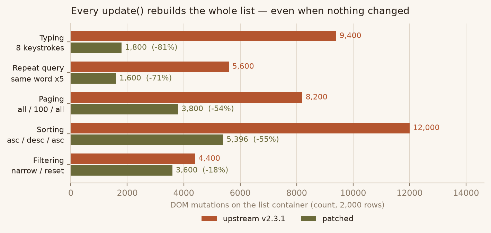
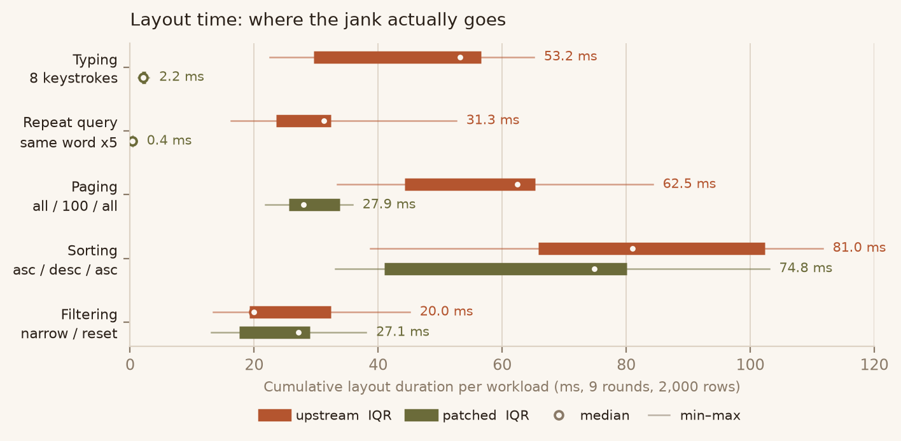
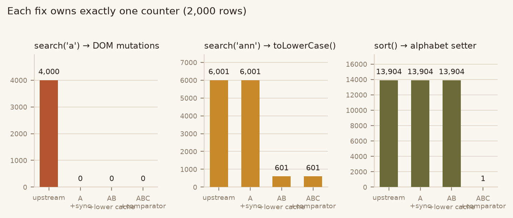

每次 update() 都把列表容器的 DOM 全部拆掉再挂回。可见集合和顺序都没变的时候，同样要付 2N 次 DOM 变更。这就是 2000 行列表在逐字符输入时掉帧的来源。
三处浪费，两处收益可判定，一处测不出。
| 场景（2000 行） | DOM 变更 | 布局耗时 | 样式重算 | 判定 |
|---|---|---|---|---|
| 逐字符输入 8 次 | 9400 → 1800 | 53.2 → 2.2 ms | 27.2 → 0.2 ms | IQR 分离 |
| 分页切换 | 8200 → 3800 | 62.5 → 27.9 ms | 31.8 → 13.6 ms | IQR 分离 |
| 重复查询同一词 | 5600 → 1600 | 31.3 → 0.4 ms | 15.0 → 0.0 ms | IQR 分离 |
| 普通排序 | 12000 → 5396 | 81.0 → 74.8 ms | 47.7 → 40.8 ms | 测不出 |
| 自定义 alphabet 排序 | 8000 → 3600 | 56.0 → 44.5 ms | 35.0 → 27.6 ms | 趋势明确 |
| 过滤收窄 + 复位 | 4400 → 3600 | 20.0 → 27.1 ms | 14.6 → 12.4 ms | 测不出 |
判定标准：patched.q3 < upstream.q1（IQR 完全不重叠）。样本 9 轮交错，每轮独立 browser context。

每个操作序列在列表容器上产生的 DOM 变更次数（2000 行，9 轮中位数）。排序一项柱高下降但耗时没降 —— 见 §06。

布局耗时分布：粗条 = IQR，细线 = 全距，白心点 = 中位数。只有 IQR 完全不重叠才记为可判定。
先数次数，再计时。计时会被 JIT 和调度噪声吃掉，而「改了多少次 DOM」是确定性的。
update()// src/index.js 上游 this.update = function () { self.templater.clear() // 把容器里的节点全部摘掉 for (var i = 0; i < il; i++) { if (is[i].matching() && ...) { is[i].show() // 再逐个 appendChild 挂回 } } }
2000 行、搜索结果 2000 行，DOM 里本来就有这 2000 行——仍然做了 2000 次 removeChild + 2000 次 appendChild。search.js 的 prepare.resetList() 里还有一次多余的 clear()，同一次搜索清空两遍。
search.list()// src/search.js 上游，内层列循环 var values = item.values(), column = columns[j] ... if (text.toLowerCase().indexOf(words[i]) !== -1)
每次按键把所有 item 的所有列重新小写化一遍，而值在两次按键之间通常没变。搜索 'ann'（命中 0 行）仍执行 6001 次 toLowerCase。
sort.js// src/sort.js 上游，比较器内部 sortFunction = function (itemA, itemB) { var sort = list.utils.naturalSort sort.alphabet = list.alphabet || options.alphabet || undefined if (!sort.alphabet && options.insensitive) { sort = list.utils.naturalSort.caseInsensitive } return sort(itemA.values()[...], itemB.values()[...]) * multi }
alphabet 是带 setter 的访问器，每次赋值都重建整张 alphabetIndexMap。2000 行一次排序 = 13904 次比较 = 13904 次索引表重建。
新增 templater.sync(items)：打 token → 单次遍历移除非目标节点 → 单次前向扫描按序就位。非 item 子节点仍会被清除，与原 clear() 语义一致。
按 (item, 列) 缓存，用缓存时的原文做严格相等校验。值被改写后原文必变，缓存自动失效，无需失效钩子。
把 naturalSort 选取、alphabet 赋值、insensitive 判断提到排序循环外，整轮只做一次。
实测端到端无可测收益（scriptMs 比值 1.06，IQR 重叠）。按最小改动原则不引入 item 上的额外属性与字符串副本。

A = 只做增量同步，AB = 加小写缓存，ABC = 加比较器前置化。三个计数器各自只被一个臂推动。
三处修改落在独立文件上，构造 A → AB → ABC 三个递进变体隔离贡献。关系是正交的：
| 计数项（2000 行） | upstream | A | AB | ABC |
|---|---|---|---|---|
search('a') DOM 变更 | 4000 | 0 | 0 | 0 |
sort('name') DOM 变更 | 4000 | 1796 | 1796 | 1796 |
search('ann') toLowerCase | 6001 | 6001 | 601 | 601 |
sort alphabet setter | 13904 | 13904 | 13904 | 1 |
32 步操作序列，每步记录容器 DOM 逐节点 outerHTML、visibleItems / matchingItems 值序列、found / filtered 标志、toJSON()。
新增 9 条测试。放到上游源码上跑：前 3 条（DOM 变更预算）必红，后 6 条（顺序、非 item 清理、空结果、缓存失效、add/remove）两臂都绿。
DOM 变更次数从 12000 降到 5396（−55%），但两档规模的布局耗时 IQR 全部重叠。
原因不是测量问题：新实现用 insertBefore 移动已有节点，旧实现用 removeChild + appendChild 摘掉再挂回。两者都会让节点脱离文档树再进入，样式失效与布局重算成本相当，insertBefore 还要在兄弟节点间定位，单次可能更贵。次数少了 55%，总代价没变。
这也说明：只看「DOM 操作次数」就宣布排序优化成功是错的。排序场景的真实瓶颈是每次移动都必须重新布局，要虚拟滚动或 transform 位移才能解决，超出「最小改动修热路径」的范围。
.browserslistrc（ie 9）构建。update() 全量重建是其长期设计，是否接受增量同步属维护者判断。parse() 初始化、pagination.refresh() 重建分页条、get-attribute.js 的线性 fallback 均未改动。results/summary.json · 原始样本 results/raw/browser_2000.json、browser_5000.json · 补丁 patches/listjs-dom-sync.patch